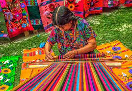

Artesania de Chiapas
Las artesanías van de la mano con el turismo, por lo que los visitantes se pueden llevar como recuerdo un elemento característico del estado y de gran valor cultural. A lo largo de todo el estado se puede encontrar artesanías en los mercados, tiendas y prácticamente en cada rincón. Chiapas cuenta con diferentes productos con estilos y técnicas diferentes, que han llegado a tener un reconocimiento internacional. En San Cristóbal de las Casas se encuentra el principal mercado de artesanías, aquí se concentra la mayor cantidad de artesanos que ofrecen sus creaciones a los visitantes. Las artesanías de Chiapas están elaboradas principalmente de materiales como ámbar, madera, cerámica, tejidos, piel y rocas.
1.Joyería de ámbar
 Uno de los grandes orgullos de Chiapas es el ámbar, es un producto de resina petrificada, que posee una belleza y calidad, por lo que es considerada una piedra semipreciosa. Los artesanos expertos elaboran joyería con este ámbar que se puede encontrar en colores transparentes amarillos o en tonos oscuros.
El ámbar de Chiapas tiene cualidades únicas, ya que es considerado como una excelente solución para alejar los malos espíritus o envidias en contra de los niños que se enferman de mal de ojo. El nombre de ámbar en Chiapas significa “la materia que aleja a los malos espíritus”.
Uno de los grandes orgullos de Chiapas es el ámbar, es un producto de resina petrificada, que posee una belleza y calidad, por lo que es considerada una piedra semipreciosa. Los artesanos expertos elaboran joyería con este ámbar que se puede encontrar en colores transparentes amarillos o en tonos oscuros.
El ámbar de Chiapas tiene cualidades únicas, ya que es considerado como una excelente solución para alejar los malos espíritus o envidias en contra de los niños que se enferman de mal de ojo. El nombre de ámbar en Chiapas significa “la materia que aleja a los malos espíritus”.
2.Textiles y tejidos

En los diseños textiles de Chiapas se usan colores llamativos, además tienen representación de flores, mariposas y otros animales característicos de la región. Hay una gran variedad de diseños, formas y propósitos, como piezas de uso cotidiano como manteles, servilletas, cojines y demás.
Estas artesanías son muy significativas y representan la gran diversidad cultural de Chiapas. En los textiles se puede encontrar el testimonio de una cultura viva que ha permanecido generación con generación. La vestimenta del estado habla de un pasado y un presente de los Chiapanecos en sus trajes típicos.
3.Alfarería
 En diferentes municipios de Chiapas se elaboran piezas con barro, que además que algunas piezas tienen un uso utilitario, son consideradas como obras de arte las cuales se crean con la finalidad de ser admiradas y transmitir algún mensaje del artista. Hay creaciones como jarrones, macetas, ollas o piezas que son solo decorativas que serán un increíble recuerdo de este bello estado. Amatenango del Valle se destaca por su antigua tradición alfarera que evidencia fuertes rasgos prehispánicos. Algunos artesanos han tenido la posibilidad de viajar al exterior para comercializar sus productos.
En diferentes municipios de Chiapas se elaboran piezas con barro, que además que algunas piezas tienen un uso utilitario, son consideradas como obras de arte las cuales se crean con la finalidad de ser admiradas y transmitir algún mensaje del artista. Hay creaciones como jarrones, macetas, ollas o piezas que son solo decorativas que serán un increíble recuerdo de este bello estado. Amatenango del Valle se destaca por su antigua tradición alfarera que evidencia fuertes rasgos prehispánicos. Algunos artesanos han tenido la posibilidad de viajar al exterior para comercializar sus productos.
4.Talabartería
 La talabartería o curtido y acabado de cuero en piel tiene especial tradición artesana en municipios como San Cristóbal de las Casas y Comitán. En Chiapas se caracteriza por tener muchos los talleres que se dedican a la elaboración de objetos y piezas como bolsas, sillas de montar, zapatos, fundas de cuchillos y machetes, mochilas, sandalias o productos de caballería entre otros.
La talabartería o curtido y acabado de cuero en piel tiene especial tradición artesana en municipios como San Cristóbal de las Casas y Comitán. En Chiapas se caracteriza por tener muchos los talleres que se dedican a la elaboración de objetos y piezas como bolsas, sillas de montar, zapatos, fundas de cuchillos y machetes, mochilas, sandalias o productos de caballería entre otros.
5.Maque o laca
 Esta técnica es ancestral desde tiempos prehispánicos, inclusos se han recuperado vestigios en las excavaciones arqueológicas de la cueva de La Garrafa en Chiapas.
Esta técnica es ancestral desde tiempos prehispánicos, inclusos se han recuperado vestigios en las excavaciones arqueológicas de la cueva de La Garrafa en Chiapas.
Esta artesanía de Chiapas consiste en cortezas de frutos como calabazas o jícaras pintadas con óleo y luego esmaltadas. Esta técnica fue evolucionando con la llegada de los españoles, aunque estuvo a punto de desaparecer, pero con el apoyo del estado para la producción y comercialización, aún sigue en pie en Chiapas de Corzo, también en otros estados como Michoacán y Guerrero.Actualmente esta técnica de la laca se usa no solo en frutos, también en otros objetos como instrumentos musicales, máscaras, juguetes, muebles, cofres y baúles.